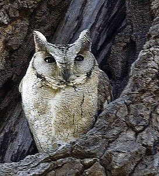

छोटा उल्लूIndian Scops Owl
Otus bakkamoena · Strigidae · BRD-0106

- Scientific name
- Otus bakkamoena (Pennant, 1769)
- Family
- Strigidae
- Hindi
- छोटा उल्लू
- Local names
- chhota ullu, chota ullu, chhota ulloo, scops owl
- Status here
- native
- Movement
- Resident, here all year
- IUCN
- LC
- Review
- audited and independently read
When to look कब देखें
Present all year.
Uses and possibilities उपयोग और संभावनाएँ
Drawn from the documented uses in the profile below, where each is labelled traditional, current or a research lead. All uses →
Tell it apart from इनसे अलग पहचानें
छोटा उल्लू / Indian Scops Owl
Otus bakkamoena (Pennant, 1769) — Strigidae
छोटा उल्लू — उत्तर प्रदेश के गाँवों और बस्तियों में पाया जाने वाला एक छोटा, कान जैसी कलगी वाला उल्लू है जो पुरानी मंजिलों और पेड़ों की कोटरों में रहता है। यह सिर्फ रात को शिकार करता है और दिन के समय गहरी कोटरों में छिपा रहता है। इसकी आवाज़ एक सुखद "पु-पु-पु" या "घु-घु" जैसी होती है जो रात भर सुनाई देती है, खासकर जनवरी से अप्रैल तक। यह कीड़ों और छोटे चूहों को खाता है और किसानों का दोस्त है।
Quick Identification त्वरित पहचान
| Feature | Description |
|---|---|
| Size | Small owl (18–23 cm total length); ear tufts prominent (distinctive) |
| Plumage | Cryptic grey or greyish-brown; finely streaked and barred; two colour morphs (grey and rufous) |
| Head | Prominent ear tufts (horn-like feathers); facial disc rounded |
| Eyes | Large, yellow; forward-facing (binocular vision) |
| Back and wings | Grey or buff with dark streaking and barring |
| Underparts | Buff or white with dark barring |
| Tail | Short, barred; less visible than ear tufts |
| Bill | Pale greenish-yellow, concealed by facial disc |
| Behaviour | Roosts in cavities or deep shadows during day; nocturnal; often perches upright at night |
Field tip: Search for roosting birds in tree cavities (mango, neem, banyan) or holes in old buildings during the day. At night, listen for the plaintive "poo-poo-poo" or "oo-poo-poo" call, often uttered from the roosting site or a nearby perch. The prominent ear tufts visible even in silhouette distinguish it from other small owls.
Morphology आकारिकी
Biometrics (subspecies glabripes, India including eastern UP):
| Measurement | Range |
|---|---|
| Total length | 180–230 mm |
| Wing (flattened chord) | 138–165 mm |
| Tail | 65–85 mm |
| Tarsus | 20–25 mm |
| Bill (culmen from base) | 14–17 mm |
| Weight | 60–110 g |
Plumage: Two colour morphs, both occurring in populations: (1) grey morph — grey-brown upperparts with fine dark streaking; (2) rufous morph — warm buff or cinnamon-brown tones. Both morphs show fine vermiculation and barring. Back and wing coverts grey or buff with dark brown markings. Flight feathers barred dark and light. Underparts buff or whitish with dark barring and streaking. Ear tufts prominent, grey or buff with dark markings; conspicuous even in poor light.
Facial features: Facial disc pale grey or buff, outlined in dark. Large, forward-facing yellow eyes. Lores densely feathered.
Bill: Pale greenish-yellow; mostly concealed by face feathers.
Legs and feet: Feathered down to the toes (lightly feathered tarsus in subspecies glabripes); feet pale yellow or yellowish-grey.
Sexes: Males slightly smaller than females; plumage patterns similar.
Juveniles: Duller, with less distinct streaking; ear tufts less prominent initially.
Vocalisations
Indian Scops Owl is moderately vocal, particularly during breeding season.
- Advertising call: A series of low, mournful hooting "poo-poo-poo" or "oo-poo-poo," delivered in a slow, rhythmic series, often 3–5 notes per sequence. Call is delivered from the roosting hole or a nearby perch, especially in early evening and through the night. Frequency approximately 0.5–1.5 kHz (lower-pitched than Spotted Owlet).
- Duetting: Pairs sometimes call in response, with slight variations in the pattern.
- Disturbance call: Harsh, rapid chattering or screaming if threatened.
Behaviour & Ecology व्यवहार और पारिस्थितिकी
Nocturnal predator: Indian Scops Owl is strictly nocturnal, hunting small insects, amphibians, and small vertebrates from dusk through the night. It hunts by perch-and-pounce, watching from a vantage point and striking at movement.
Cavity nester: Depends heavily on tree cavities for roosting and nesting. Uses natural cavities in old mango, neem, and banyan trees, as well as cavities made by woodpeckers. In villages, may roost in holes in walls, under eaves, or in disused buildings.
Monogamous and territorial: Males hold individual territories and call regularly from roosting cavities. Pairs may use the same roost site for multiple years.
Breeding and nesting: Breeds from December to April, with peak activity February–March. Nest cavity is lined minimally with feathers and debris. Clutch size 3–5 eggs; incubation 21–24 days. Chicks fledge at 25–35 days.
Life Cycle / Phenology जीवन चक्र
- November–December: Pair formation; males establish and defend territories; calling increases
- December–February: Breeding season peak; egg-laying and incubation; males very vocal in defence
- February–April: Chick-rearing period; peak fledging April-May
- May–August: Post-breeding; birds quieter; juveniles learning to hunt
- August–November: Autumn; reduced calling; birds remain in territories; some calling on mild nights
- Year-round: Continuous presence; nocturnal activity throughout the year
Host Plants or Prey आहार
Varied small-animal diet:
- Large insects: beetles (especially dung beetles), grasshoppers, crickets
- Flying insects: flying termites (alates), moths
- Amphibians: small frogs and toads
- Reptiles: small lizards
- Small mammals: field mice, shrews, young rats
- Occasional small birds
Predators / Natural Enemies शत्रु
- Pallid Harrier (Circus macrourus) and other harriers — hunt roosting birds at dawn
- Domestic cats and dogs — take roosting birds or chicks
- Snakes — raid nests; consume eggs and chicks
- Crows (Corvus spp.) — mob and harass; may take chicks
Agricultural / Human Relevance कृषि प्रासंगिकता
Natural pest control: By hunting insects and rodents, Indian Scops Owl provides valuable pest-control services in agricultural areas, reducing populations of agricultural pests without chemical intervention.
Cultural beliefs: Like other owls in rural Uttar Pradesh, this species is subject to traditional beliefs. In some areas, it is considered auspicious; in others, superstitions surround its call. Education about its pest-control role is valuable for local conservation.
Protected status: Schedule IV of the Wildlife (Protection) Act, 1972 (India). The species is legally protected throughout the country.
Expected Locally स्थानीय रूप से अपेक्षित
Not a field record. Written from published accounts for eastern Uttar Pradesh. No confirmed local sighting yet — if you have seen it, that is what the atlas needs.
अभी तक स्थानीय पुष्टि नहीं। यह विवरण प्रकाशित स्रोतों से है, किसी अवलोकन से नहीं।
Indian Scops Owl is expected year-round as a resident in Basti and Ayodhya districts, particularly in areas with suitable cavity trees (mango orchards, neem groves, village commons) and old buildings. Listen for the soft "poo-poo-poo" call during dusk and through the night, especially from December to April when birds are most vocal. Search for roosting birds during the day in tree cavities and building holes. A first record for the atlas would be a photograph showing the prominent ear tufts and yellow eyes, or audio recording of the call, with date and location.
Distribution वितरण
Global range: The Scops Owl complex has several species across Africa, Asia, and Europe; Otus bakkamoena is distributed across the Indian subcontinent and into Southeast Asia.
In India: Common resident throughout the mainland, from the Himalayan foothills to the Deccan and Western Ghats; absent from the driest deserts.
In Uttar Pradesh: Resident throughout the state in suitable habitat (dry forests, orchards, settlements).
In Basti district / eastern UP: Expected as a resident, particularly in mango-growing areas and villages with large shade trees.
Research Questions शोध प्रश्न
- Which tree species and building types are preferred for roosting and nesting cavities? / किन पेड़ों की कोटरों में रहते हैं? — Identify and monitor cavity trees; note species and measurements.
- What is the seasonality of calling activity? / कब सबसे ज़्यादा पुकारता है? — Record calling throughout the year (simple notebook record, no equipment needed).
- Are the same cavities reused year after year, or do owls switch roosts? / क्या हर साल एक ही जगह में घोंसला बनाते हैं? — Monitor specific cavities across breeding seasons.
- What is the diet composition based on pellet analysis? / क्या खाते हैं? — Collect and dissect pellets under roosting sites.
- How do owls interact with other cavity-nesting birds and woodpeckers? — Document interactions and whether competition occurs.
Similar Species मिलती-जुलती प्रजातियाँ
| Species | How to tell apart | हिंदी |
|---|---|---|
| Spotted Owlet (Athene brama) — if confused | Lacks ear tufts; stockier build; white spots on plumage; louder "ji-ji-ji" call; different roost behaviour | चित्तीदार उल्लू — कलगी नहीं है |
| Jungle Owlet (Glaucidium radiatum) — if present | Smaller; no ear tufts; rufous and grey forms; different calls and behaviour | जंगली उल्लू — और छोटा |
| Tawny Eagle (Aquila rapax) — if silhouette confused | Daytime raptor; different shape and behaviour; no ear tufts | शिकारी चील — दिन का पक्षी |
Field rule: Small owl + prominent ear tufts + soft "poo-poo-poo" call + cavity roosting = Indian Scops Owl. The ear tufts are diagnostic and visible even in silhouette at night.
Taxonomy & Classification वर्गीकरण
Original description. This species was first described as Strix bakkamoena by Thomas Pennant in 1769 from a specimen collected in India. The genus Otus was later erected to contain the various scops owls of the Old World.
Subspecies. Multiple subspecies are recognised across the range; O. b. glabripes (Hume, 1873) is the subspecies occurring in India, characterised by lightly feathered tarsi (hence "glabripes" = bare-legged).
Family and order placement. Order Strigiformes; family Strigidae (true owls). Strigidae contains around 230 species of nocturnal raptors worldwide.
Phylogenetic notes. Molecular studies place Indian Scops Owl within a clade of Asian Otus species, distinct from African and European forms.
IUCN status rationale. Assessed as Least Concern (LC). The species is widespread, maintains stable populations, and shows high tolerance for human-modified habitats and village settings.
Photo Gallery फोटो गैलरी
No photos yet — add field photos to media/species/indian_scops_owl/ and run node scripts/sync_photos.js.
Photos needed आवश्यक फोटो
- [ ] Perched adult showing ear tufts and cryptic plumage (कलगी के साथ)
- [ ] At cavity entrance (कोटर में)
- [ ] Calling male from perch (पुकारते हुए)
- [ ] Close-up of face showing yellow eyes and ear tufts (आँख और कान)
- [ ] Rufous morph if captured (लाल रंग की किस्म)
References संदर्भ
- Pennant, T. (1769). Indian Zoology. London.
- Ali, S. & Ripley, S.D. (1999). Handbook of the Birds of India and Pakistan. Vol. 3. Oxford University Press, New Delhi.
- Grimmett, R., Inskipp, C. & Inskipp, T. (2011). Birds of the Indian Subcontinent. 2nd ed. Christopher Helm, London.
- Rasmussen, P.C. & Anderton, J.C. (2005). Birds of South Asia: The Ripley Guide. Smithsonian Institution, Washington DC.
- König, C., Weick, F. & Becking, J.H. (1999). Owls: A Guide to the Owls of the World. Yale University Press.
- BirdLife International (2024). Otus bakkamoena. IUCN Red List of Threatened Species. Ver. 2024.
- GBIF Occurrence Data — Otus bakkamoena, Uttar Pradesh (2010–2025).
Source file: species/fauna/birds/indian_scops_owl.md